Web Development Projects
Impressionist Information Page - Mobile Web Development Project
May 2026
Click Here to view the project.Developed as a final project in a Mobile Web Development Course as an educational, responsive web platform designed to introduce users to Impressionist artists and direct them to physical museum galleries. Built with an accessibility-first approach, the site features cross-device optimization and visual transitions. The design was refined through target user testing to balance modern aesthetics with high readability.
Skills:
- Frontend Development with HTML, CSS, and JavaScript
- Responive Web Design
- Web Accessibility
- Performance Optimization
- Progressive Visual Enhancements
- Semantic Web and SEO
Commission Artwork Platform Concept - Web Development Project
May 2025
Click Here to view the project.An e-commerce prototype designed as part of the final for Web Development as a multi-page web application for a future business concept. The project features a global navigation architecture, synchronized layouts, and customized product content pages. Developed as a foundational web application, the design evolved through structured user testing to refine visual consistency, page layout, and data presentation.
Skills:
- Frontend Development with HTML, CSS, and JavaScript
- E-commerce Layout and UX
- Component Positioning
- UI/UX Refinement
- Multi-Page Site Architecture
3-D Modeling Projects
Click and drag to interact with the models.
Staff
August 2026
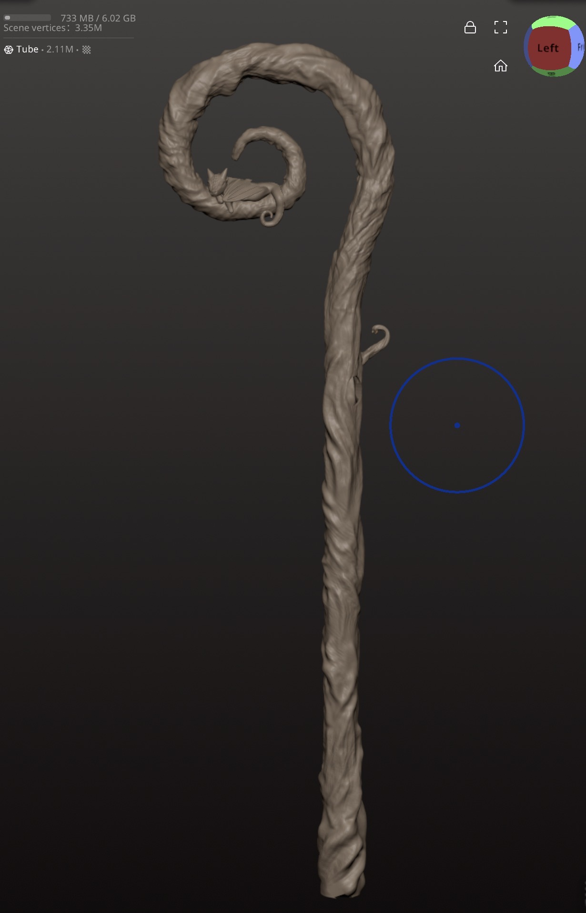
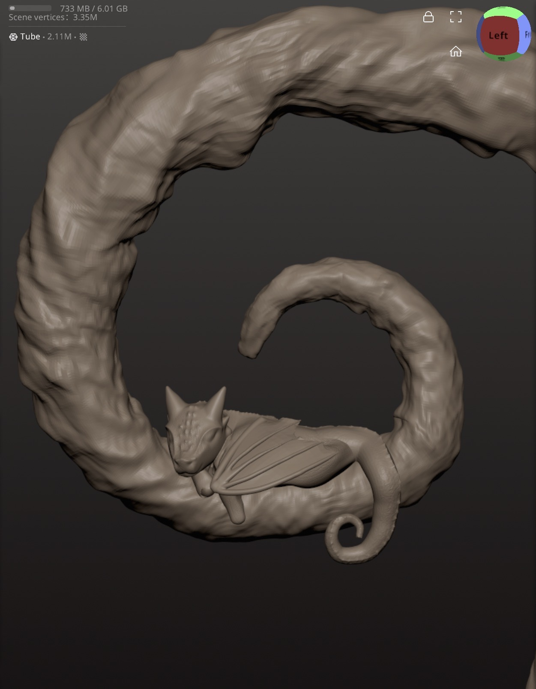
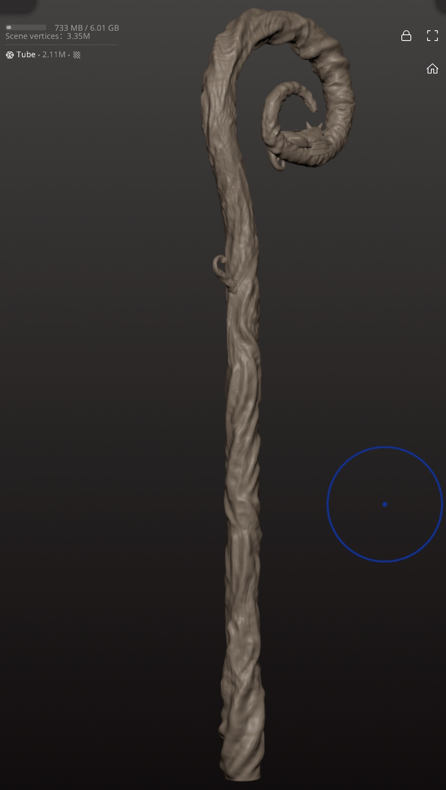
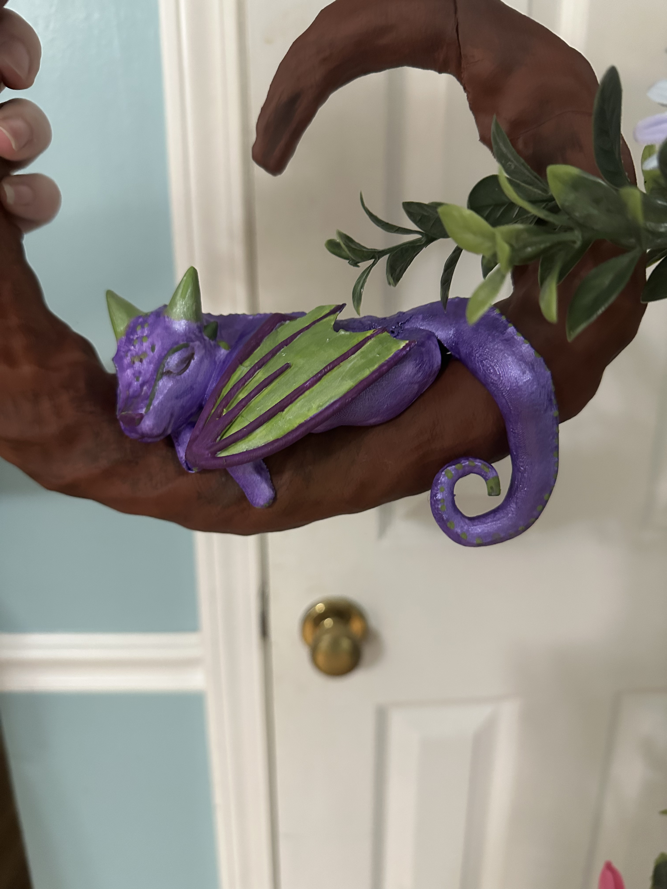
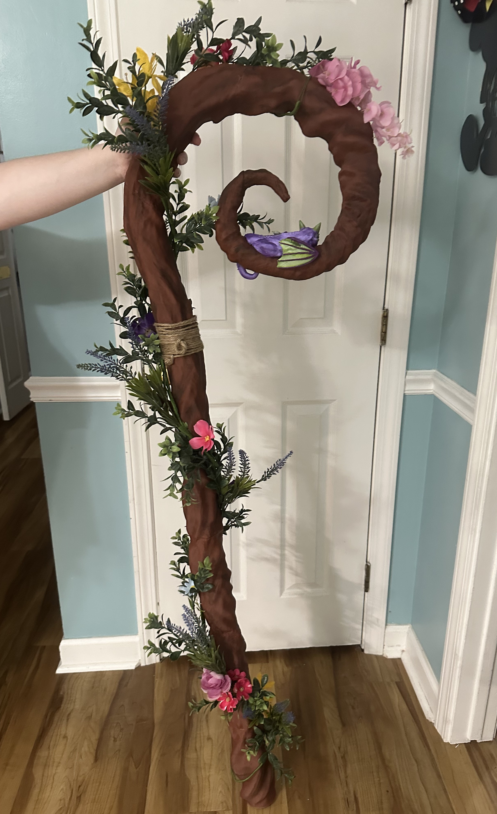
This project involved creating a 3D model of a staff using Nomad Sculpt, focusing on digital sculpting, large-scale fabrication, and functional product design. The process included refining the model to achieve accurate proportions and details, testing the model for structural integrity and functionality of a magnetic door used for storage. As well as, preparing it for fabrication and printing on a device that is not large enough the whole project at once.
Skills:
- Nomad Sculpt Proficiency
- Advanced Digital Sculpting
- Large-Scale Fabrication
- Slicer Configuration for Wood Filiment
- Functional Product Design and Engineering
- Texturing
Snake
August 2026
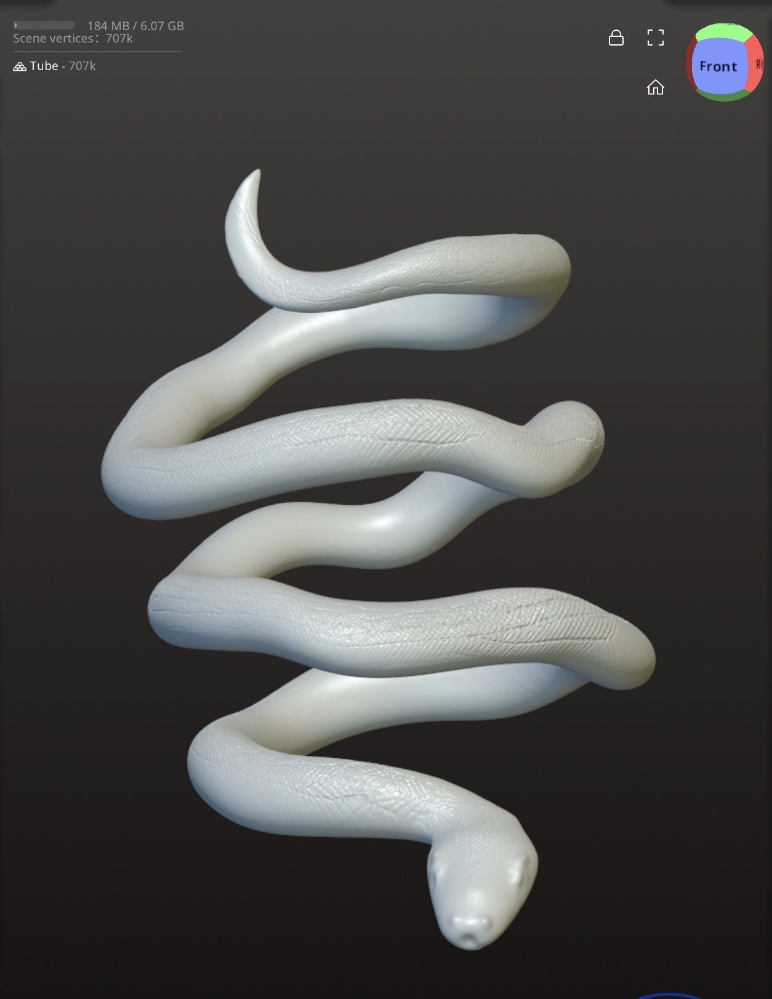
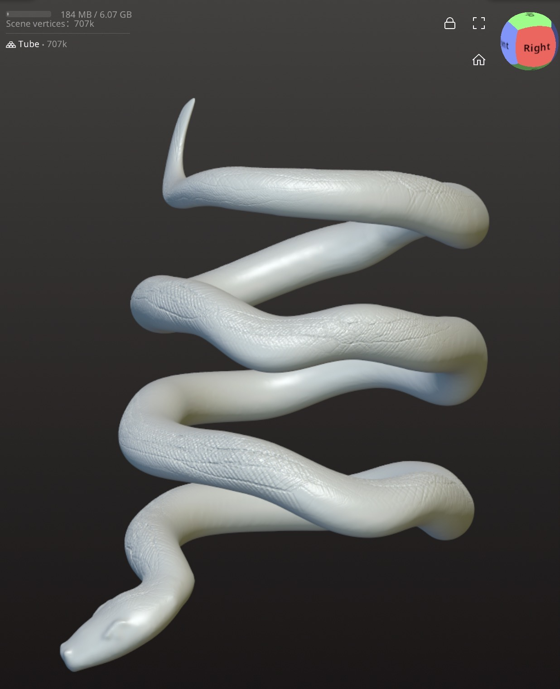
This project involved creating a realistic snake armband with the use of Nomad Sculpt. The modeling focused on digital sculpting, light texturing, and realistic rendering techniques. The process included refining the model to achieve a lifelike appearance and ensuring accurate proportions and details.
Skills learned:
- Nomad Sculpt Proficiency
- 3D Digital Sculpting
- Light Texturing
- Realistic Rendering
- Prop Development
Dog
February 2026
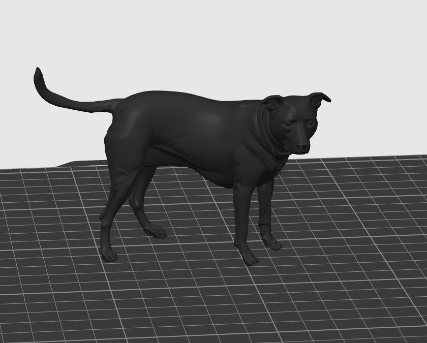
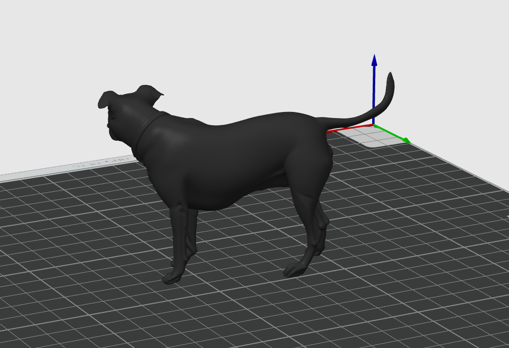
This project involved creating a 3D model from a photo of a specific dog using AI to scan an image to convert into a 3D mesh model. The process included manipulating and repairing the original mesh model and refining the design for accurate representation. The final result was a detailed 3D model of the dog that captured its features, position, and proportions accurately.
Skills:
- Bambu Studio Proficiency
- AI Image Scan to 3-D model Conversion
- Mesh Model Repairing
- Digital Prototyping
Hydraulic Press Die
March 2026
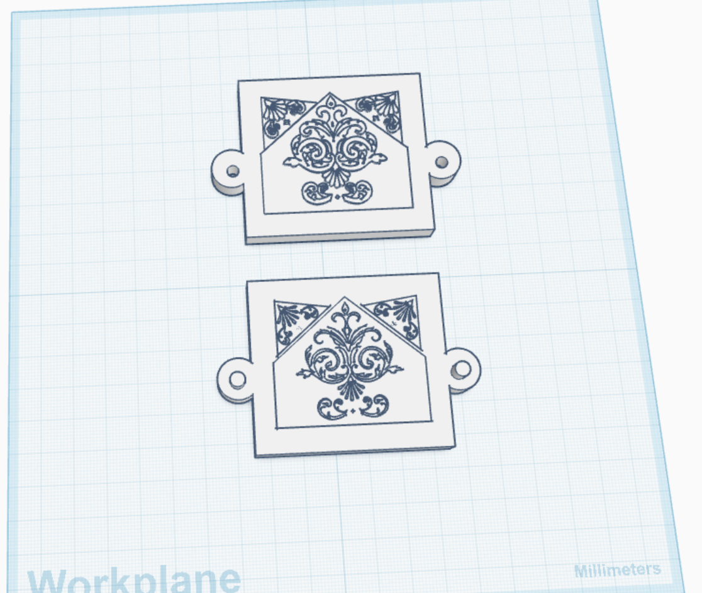
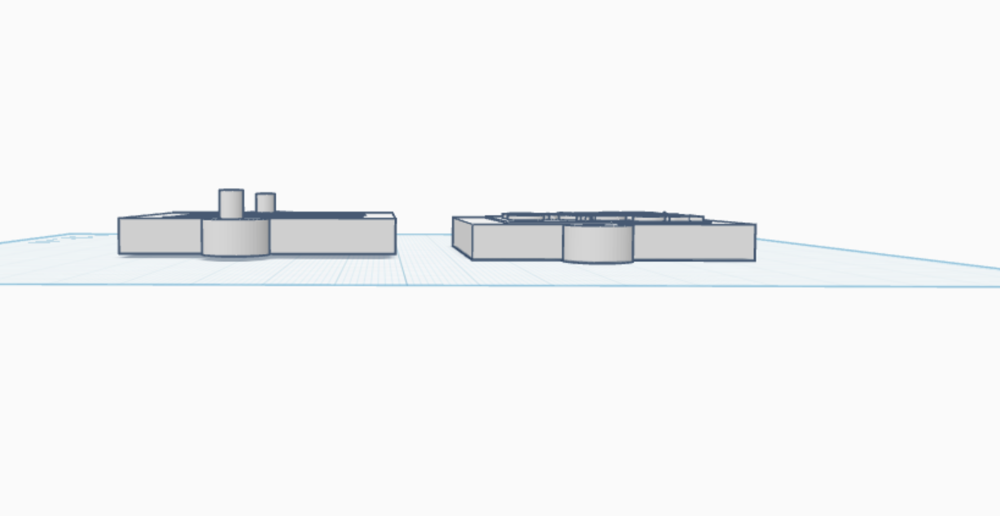
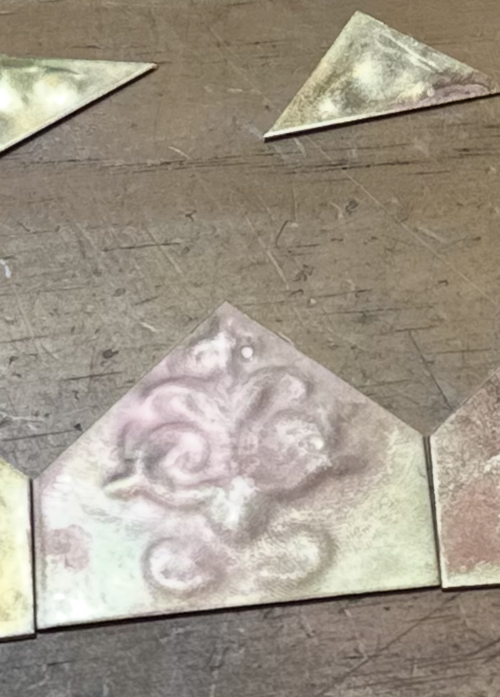
This project involved designing and prototyping a hydraulic press die using Tinkercad. The focus was on precision modeling and optimizing slicing parameters for improved structural integrity. Material prototyping was conducted to test the design and ensure functionality. The end result was a fully functional hydraulic press die made from PETG that created an impression in metal sheets.
Skills:
- Tinkercad
- Precision Modeling
- Optimized Slicing Parameters for improved structural integrity
- Conducted Material Prototyping